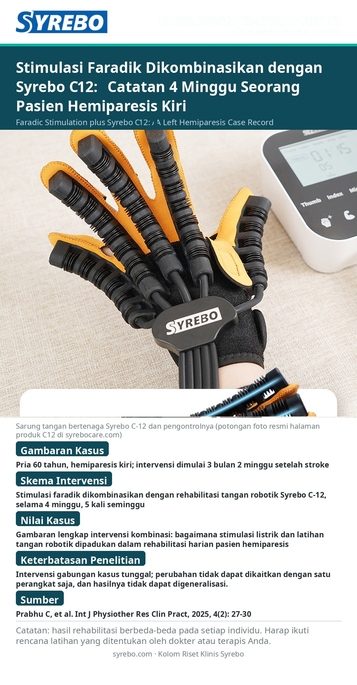

Edisi 09 · Versi poster
Stimulasi Faradik Dikombinasikan dengan Syrebo C12: Catatan 4 Minggu Seorang Pasien Hemiparesis Kiri

Sumber: Prabhu C, Mohan P, Sajjana D. Rehabilitation of Left-Sided Hemiparesis Post-MCA Infarction Using Faradic Electrical Stimulation and Robotic Hand Rehabilitation: A Case Report. International Journal of Physiotherapy Research and Clinical Practice, 2025, 4(2): 27-30.
Halaman sumberKeterbatasan penelitian: Intervensi gabungan kasus tunggal; perubahan tidak dapat dikaitkan dengan satu perangkat saja, dan hasilnya tidak dapat digeneralisasi.
Catatan: hasil rehabilitasi berbeda-beda pada setiap individu; rencana latihan khusus harus disusun di bawah bimbingan dokter atau terapis.
Baca teks lengkap dalam bahasa MandarinRead in English